Токио · Ниси-Адзабу · ресторан
TOUMIN в Ниси-Адзабу: французская кухня, которая даёт продуктам «зимнюю спячку»
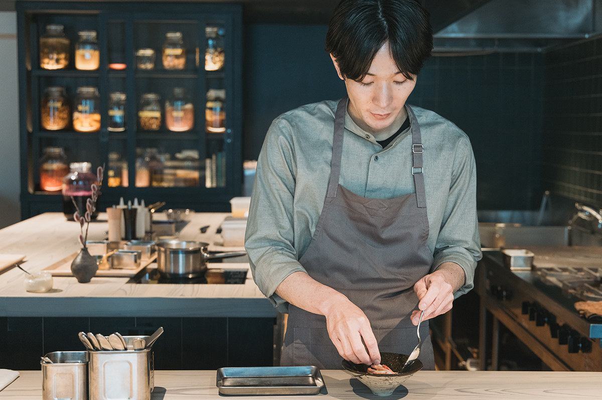
Название TOUMIN по-японски значит «зимняя спячка». Шеф Кадзуя Игути выдерживает сезонные продукты в рассоле и в молочнокислом брожении, а потом превращает их во французские блюда, каких не попробовать там, где эти продукты выросли.
Шеф
Хвалить то, что видел своими глазами
TOUMIN открылся в октябре 2023 года в токийском районе Ниси-Адзабу. Шеф Кадзуя Игути прошёл через несколько известных французских ресторанов, в том числе Tateru Yoshino Ginza и Michel Bras Toya Japon на Хоккайдо, а затем был шефом в овощном ресторане REVIVE KITCHEN THREE AOYAMA / restaurant RK. В собственном ресторане он выбрал две темы: японские сезонные продукты и брожение. Японское здесь всё, вплоть до посуды, бокалов и приборов.
«Когда я был шефом в других ресторанах, я работал и с икрой, и с фуа-гра, и с трюфелями, классикой французской кухни. Но когда гость говорил, что фуа-гра была вкусной, я не понимал, насколько этому стоит радоваться. Я всю жизнь учился в Японии, и мне приятнее, когда хвалят овощи с поля, где я сам был, чем заморский продукт, который растили не у меня на глазах. Тогда я могу с гордостью сказать: да, это вкусно»
шеф Кадзуя Игути
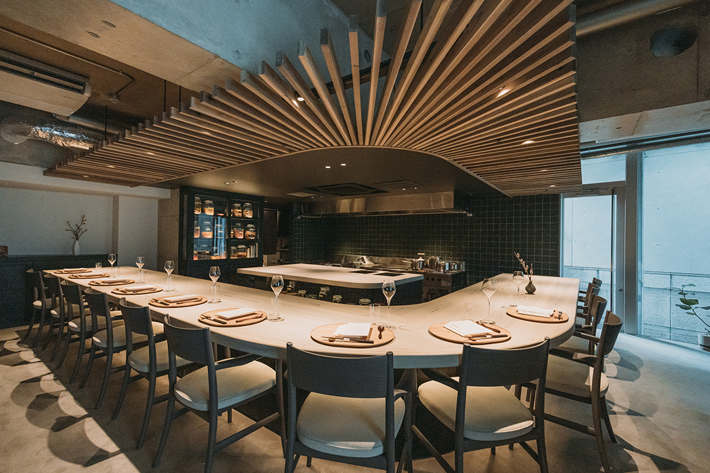
Стойка из криптомерии рассчитана на 12 гостей. Шефу важно разговаривать с ними и рассказывать о продуктах и посуде, а каждое блюдо он выкладывает прямо перед гостем. Посуду он тоже выбирает сам: он любит керамику и часто ходит на выставки японских мастеров.
Продукты
Поля Омэ и рыба из Хёго
Курс омакасэ из 11 блюд меняется каждый месяц. Рыба и морепродукты приходят из родной префектуры шефа Хёго, а овощи от фермеров, с которыми он познакомился, пока учился, и на фермерском рынке в Аояме. С фермерами шеф дружит и иногда ездит на поля вместе с командой.
«Продукты я выбираю по текстуре и аромату. Ome Farm в городе Омэ в Токио выращивает овощи старых негибридных сортов, очень элегантные. Овощи Green Basket Japan с полей в Одаваре простые, но вкусные. Там подходят к делу очень логично, и я подробно расспрашиваю, что именно определяет вкус: так я лучше понимаю продукт, и это помогает придумывать меню»
шеф Кадзуя Игути
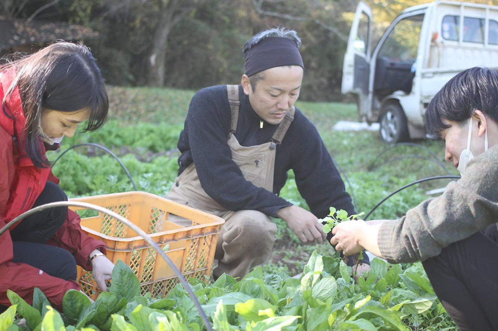
Главное правило шефа: не жалеть времени и труда, чтобы раскрыть характер продукта. Овощей в курсе много, но сырыми их почти не подают.
«Если гость приходит есть местные продукты в Токио, блюдо должно быть вкуснее, чем там, где эти продукты выросли. В Michel Bras были свои поля, и я понял, что сырой овощ вкуснее всего в ту минуту, когда его едят прямо на грядке. В Токио съезжаются прекрасные продукты со всей страны, но дорога занимает время. Поэтому их нужно обработать, чтобы довести до лучшего состояния. Для меня в этом и есть ответ, как готовить в Токио»
шеф Кадзуя Игути
Брожение
Что даёт «спячка»
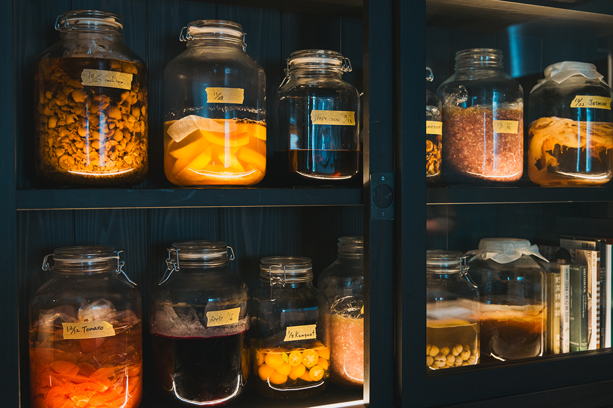
Брожение стало для шефа способом готовить то, что могло появиться только в Токио. Помидоры, каштаны, таро и многое другое он ставит на молочнокислое брожение или солит. Продукт как будто погружается в спячку, отсюда и название ресторана, и выходит из неё с усиленным вкусом. Чистый вкус сезона от этого только ярче, а блюдо удивляет.
«После брожения аромат дольше остаётся во рту, и получается многослойный вкус, как и положено французской кухне. Ещё брожение позволяет соединить продукты, которые иначе никогда бы не встретились: например, весной заквасить белую спаржу, а осенью подать её с сайрой. Эта спаржа провела время не зря, и это совсем не то же самое, что взять замороженную. Правильного ответа в брожении нет, и каждый раз результат получается другим. Этим оно и интересно»
шеф Кадзуя Игути
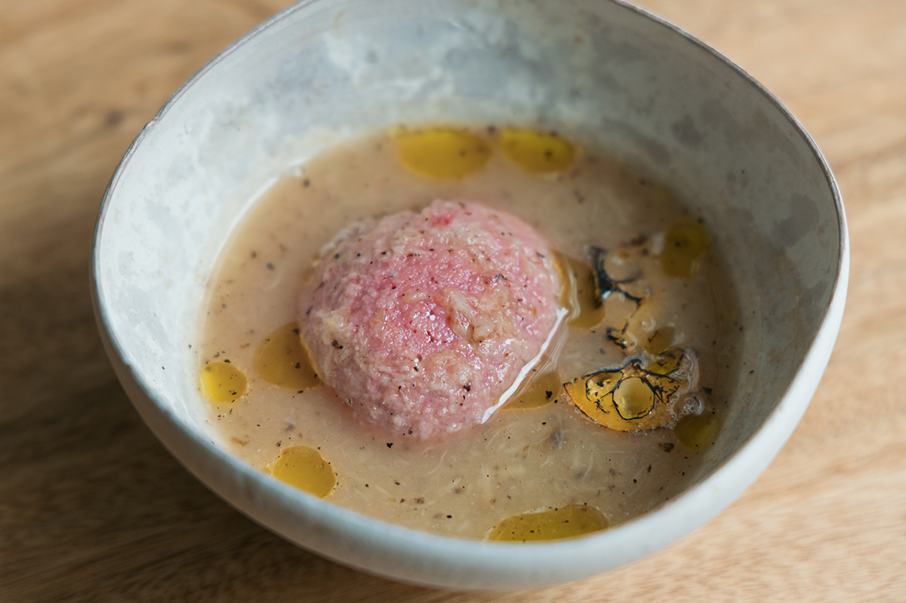
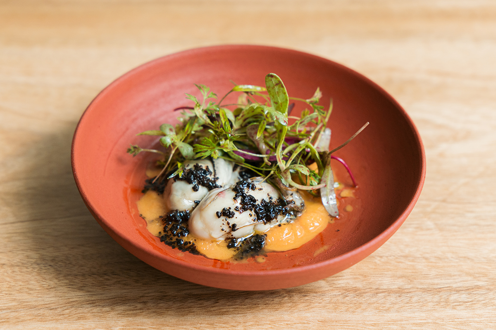
Овощное этюве появляется в каждом курсе. На тарелке около 20 видов овощей, в основном с ферм вокруг Токио, в том числе с Ome Farm и 53farm. Соусы меняются по сезону: пюре из печёного баклажана, мусс из ботвы моркови.
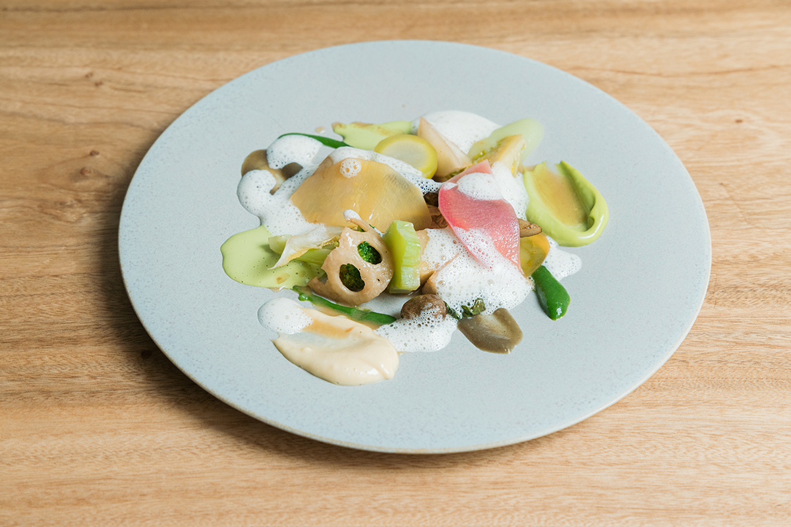
Батат бэни-харука от Green Basket Japan шеф три-четыре часа запекает при низкой температуре, а затем жарит в тэмпуре и подаёт с соусом из острой приправы кандзури и яйца онсэн. Скумбрию савара из порта Сибаяма в Хёго готовят как мёньер с пастой из ферментированной кожуры мандарина и белого мисо.
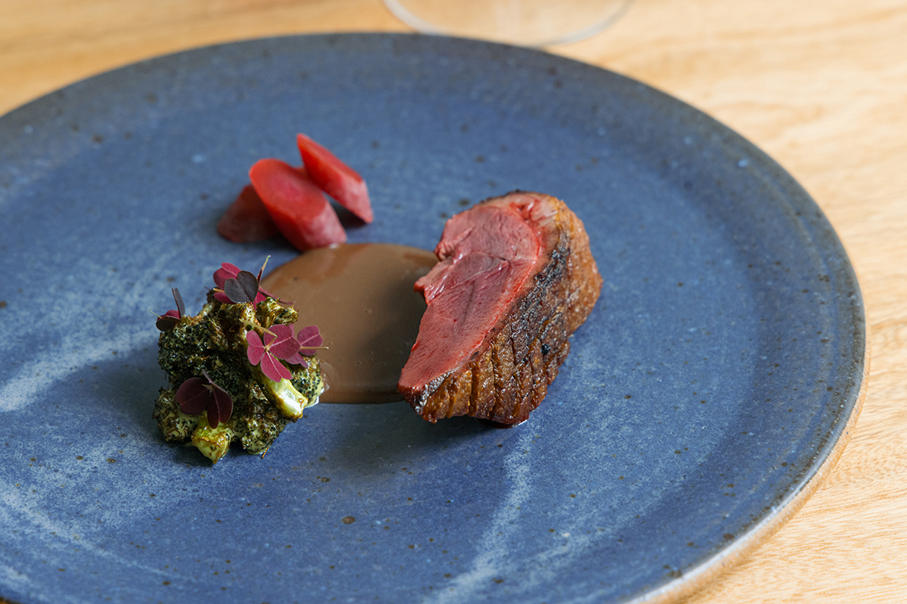
Напитки
Брожение и в бокале
Безалкогольное сопровождение к курсу тоже держится на бактериях и дрожжах. Домашнюю комбучу на зелёном чае с альпинией гэтто смешивают с отваром груши и виноградной лозы, сиропом айвы и газом, и получается напиток вроде шампанского. По словам команды, им увлекаются даже гости, которые обычно пьют алкоголь.
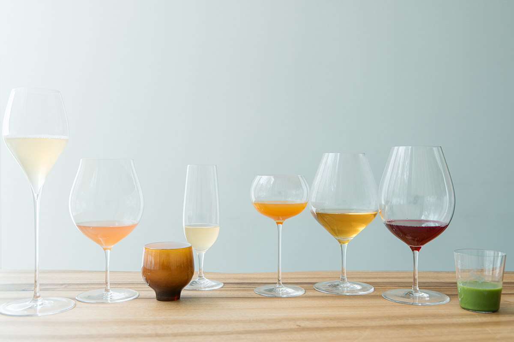
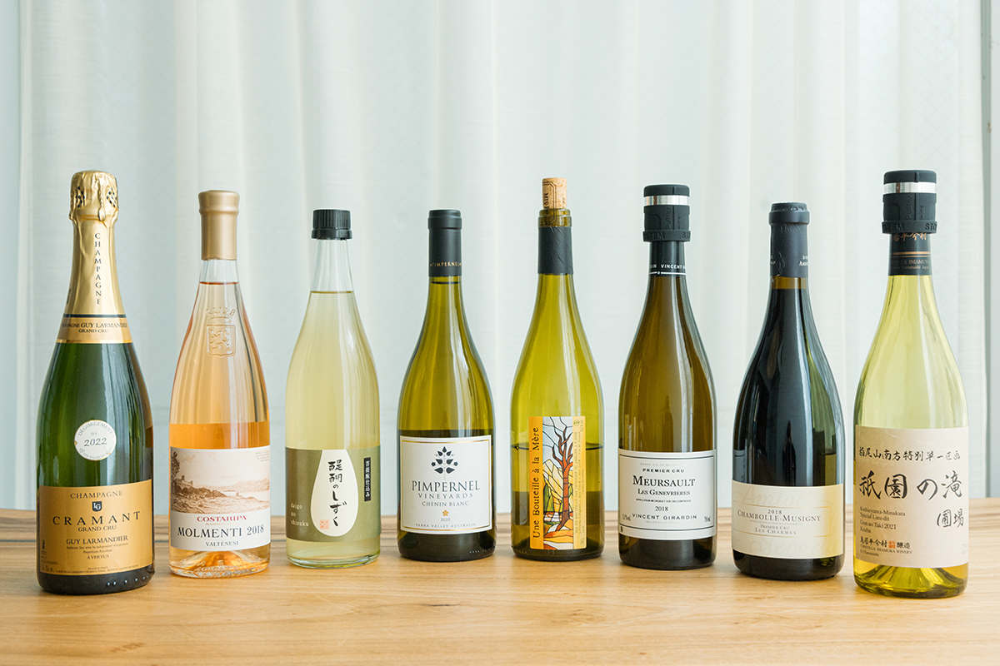
Десерты готовит кондитер ресторана. Например, яблоки «Курэнай-но юмэ» с фермы в Иватэ она соединяет с солёным песочным печеньем в духе тарта татен и подаёт с молочным мороженым, в которое перешёл аромат свежего лаврового листа.
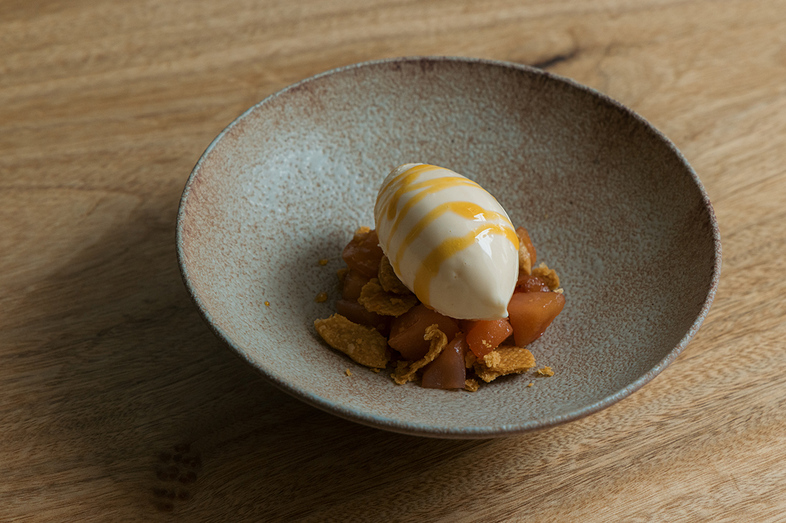
В 2024 году, через несколько месяцев после открытия, шеф признавался, что многие заготовки ещё бродили недолго, и собирался ставить на брожение продукты будущих сезонов, чтобы кухня становилась ещё самобытнее. Чем дольше выдерживаются его банки, тем интереснее должны становиться блюда TOUMIN.
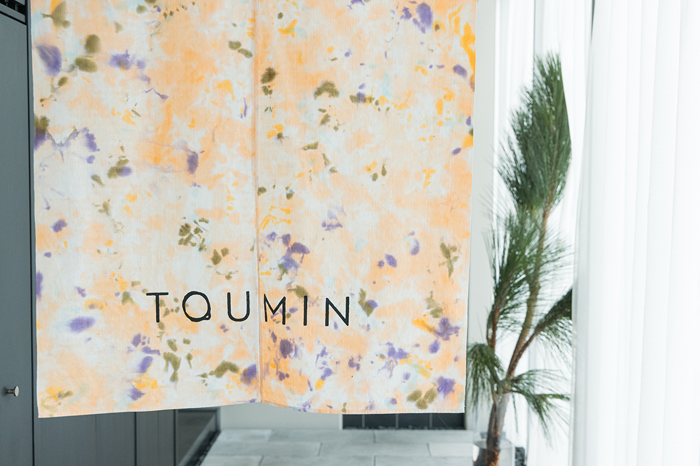
TOUMIN
- Адрес
- Токио, Минато, Ниси-Адзабу, 2-24-14, здание «Барбизон 73», 2-й этаж
- Телефон
- +81 3-6451-1718
- Часы работы
- вторник–пятница начало в 18:00 или 19:00, суббота начало в 12:00 или 18:00
- Выходные
- воскресенье, понедельник
- Цены / Вход
- курс 17 600 иен, с алкогольным сопровождением 28 600 иен, с безалкогольным 24 750 иен (с налогом)
Фото: Майко Фукуи.